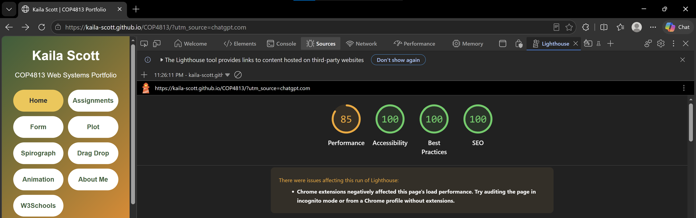
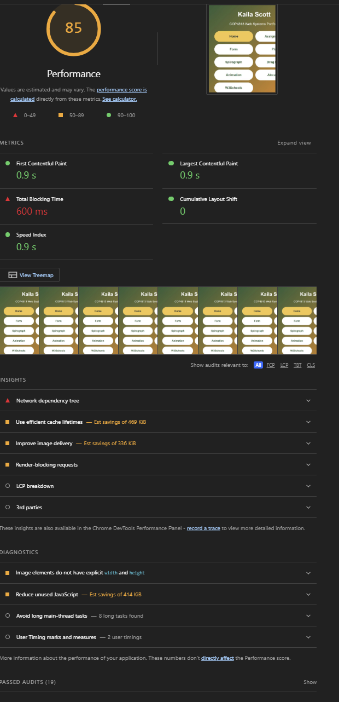
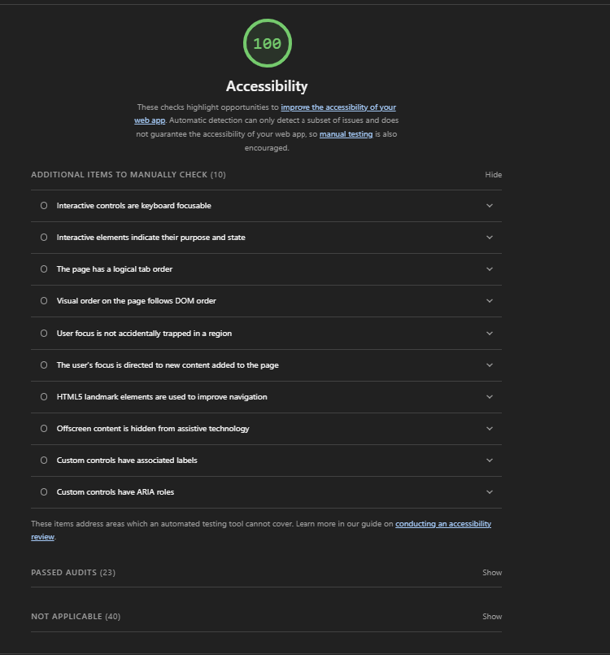
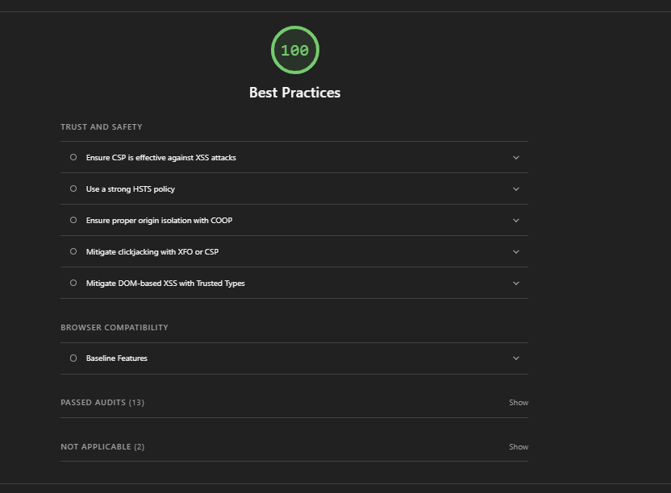
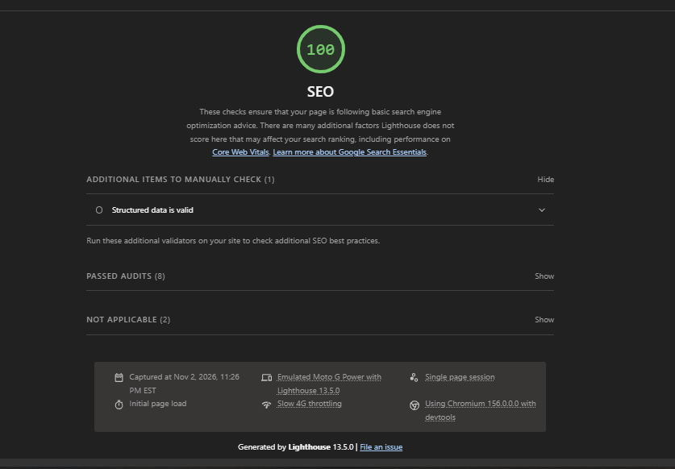

About This Assignment
For this assignment, I updated my COP4813 homepage to work better on mobile devices using responsive CSS. My goal was to make the menu, images, and content easier to navigate on smaller screens without removing features from the desktop version.
I used Google Chrome Lighthouse in Mobile Navigation mode to evaluate Performance, Accessibility, Best Practices, and SEO.
Overall Lighthouse Results
- Performance: 85/100
- Accessibility: 100/100
- Best Practices: 100/100
- SEO: 100/100

Performance

My website received a Performance score of 85/100. First Contentful Paint and Largest Contentful Paint were both 0.9 seconds, and Cumulative Layout Shift was 0. However, Total Blocking Time was 600 milliseconds. Lighthouse identified opportunities to improve caching, image delivery, render-blocking requests, and unused JavaScript. It also reported eight long main-thread tasks. Browser extensions may have negatively affected the performance results during this test.
Accessibility

My website received an Accessibility score of 100/100, with 23 automated audits passed. This suggests that the website follows the accessibility practices tested by Lighthouse. Additional manual checks are still recommended, including keyboard navigation, focus behavior, and screen reader usability.
Best Practices

My website received a Best Practices score of 100/100, with 13 automated audits passed. Lighthouse did not identify any scored issues in this category. Some additional security and browser compatibility checks were listed for manual review.
SEO

My website received an SEO score of 100/100, with all eight applicable automated audits passed. Lighthouse did not identify any scored SEO issues. Structured data validation was listed as an additional manual check.
Mobile Design Improvements
I used CSS media queries to adjust the website for smaller screens. The navigation changes to a two-column layout with larger touch-friendly buttons, images resize to fit the screen, and the content becomes easier to read without horizontal scrolling.
Overall, I am happy with the Lighthouse results, especially the perfect scores in Accessibility, Best Practices, and SEO. The Performance category showed me some areas that could still be improved, particularly image optimization and JavaScript loading. I plan to keep these in mind as I continue working on my website.